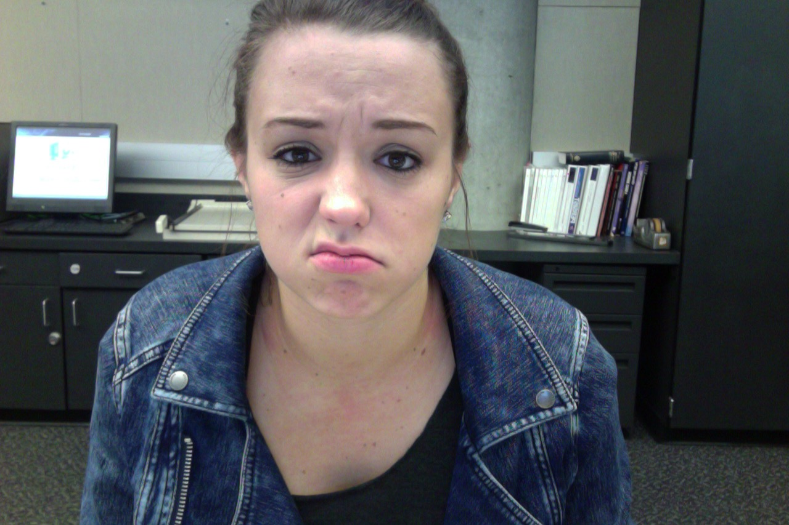

About Me
Ryann Engel
Student

---
Junior at EWU in the BFA program.
## Major
I am in a BFA major because it allows me to get all of the training that I would be able to get in the VCD program **in conjuntion** with training from the _art department_.
## Contact Info
* [Email Me](engelryann@gmail.com)
* @ryannengel
* [My Homepage](http://ryannengel.github.io)
## Favorite Hockey Team
1. Chicago Blackhawks
2. Tampa Bay Lighting
3. Pittsburg Penguins
> Art washes away from the soul the dust of everyday life